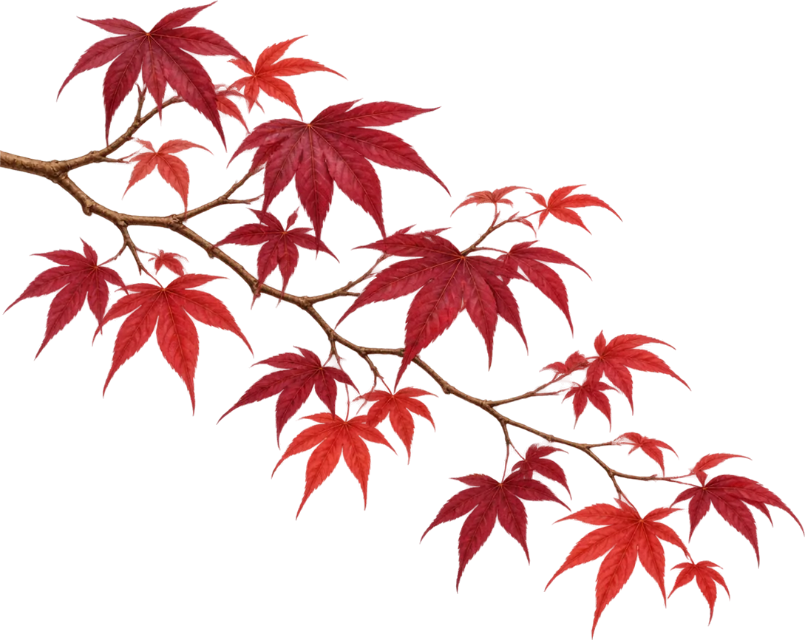
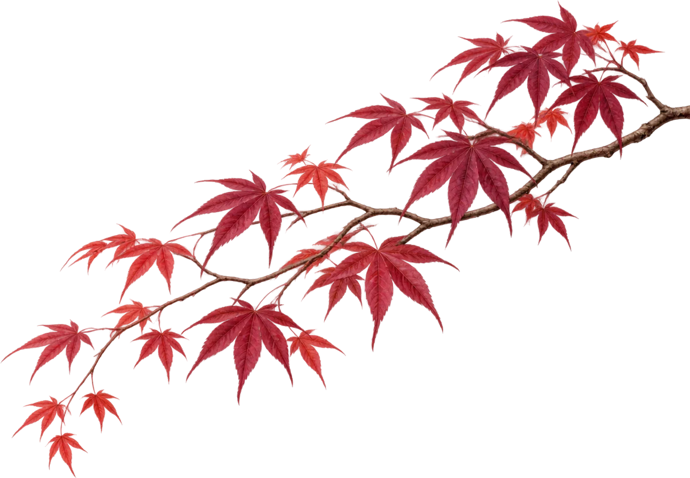

Software×Trading×Quantenphysik
Software für klare Entscheidungen
Trading-Journal und weitere Tools, die Disziplin, Analyse und Performance auf ein neues Level bringen.
- Trading-JournalAnalysieren. Verstehen. Verbessern.
- Quantitative ToolsDatengetriebene Einblicke in deine Performance.
- Weitere SoftwareModulare Tools für diszipliniertes Trading.